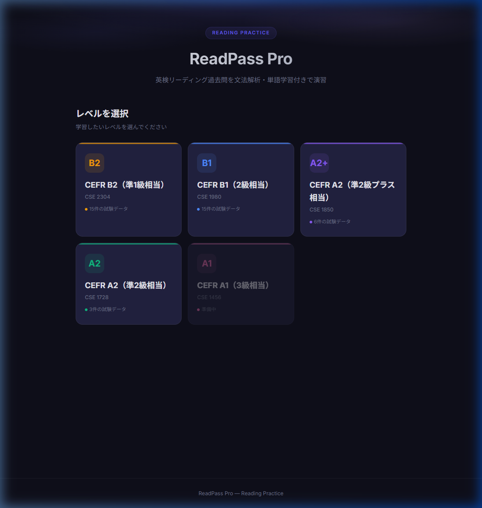
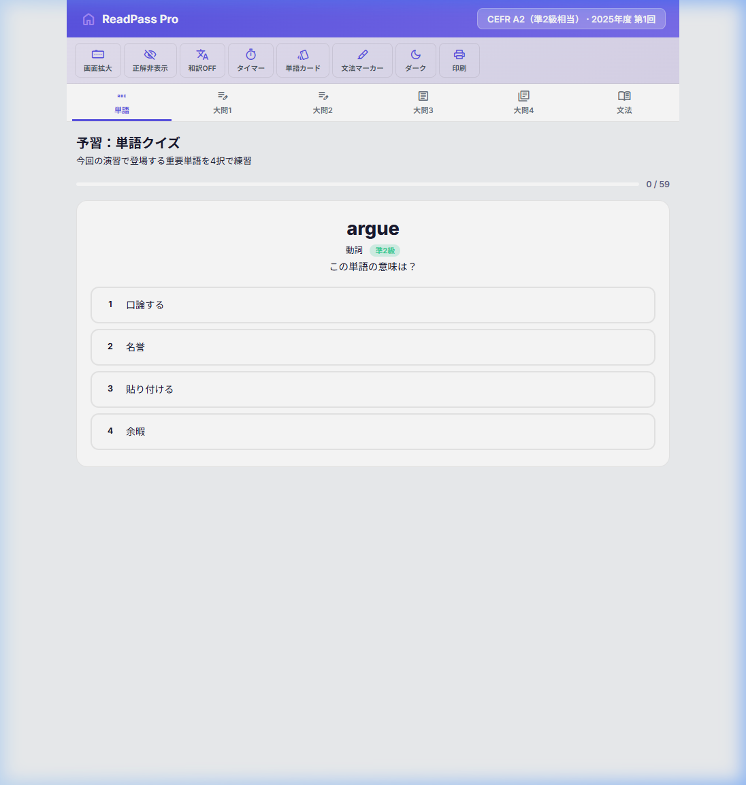
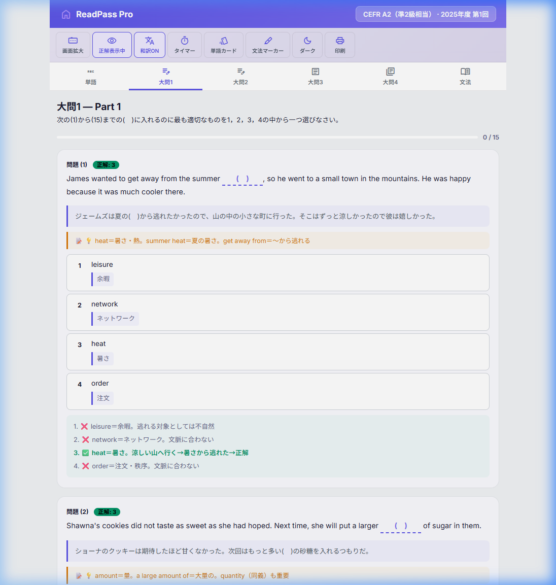
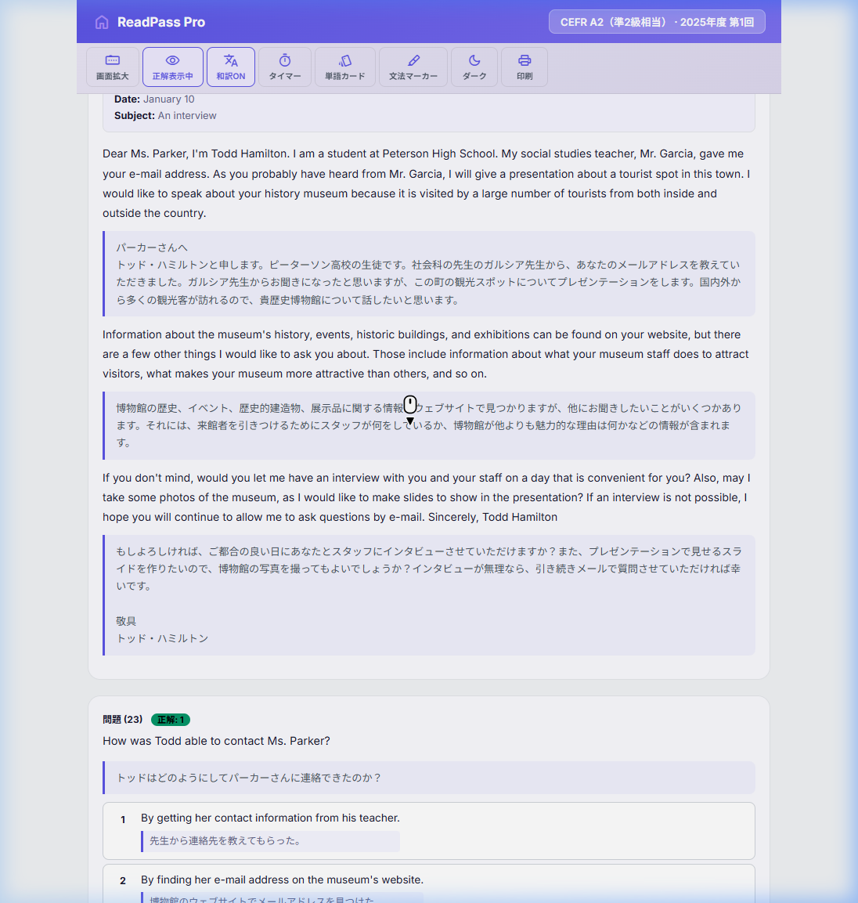
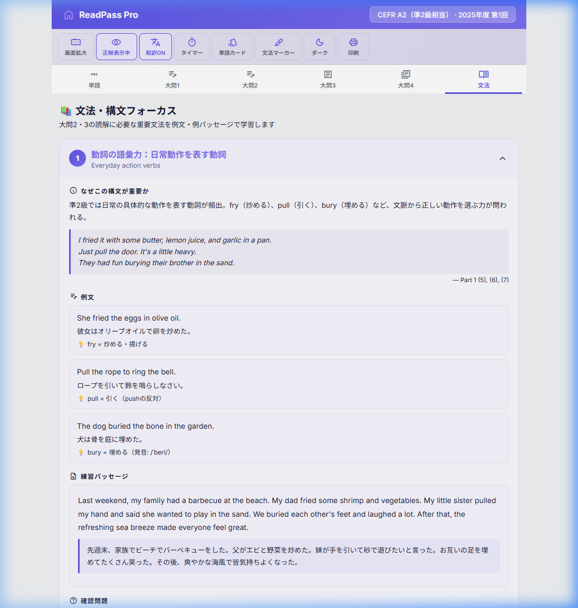

英検リーディング過去問を文法解析・単語学習付きで効率的に演習するためのWebアプリです
← トップページに戻るReadPass Pro は、英検のリーディング過去問をより深く理解するために開発されたWebアプリです。 単に問題を解くだけでなく、プロ講師レベルの解説、日本語訳、語彙クイズ、文法・構文フォーカスを通じて、 英文を「読める」だけでなく「分かる」レベルへと引き上げます。
英検の過去問はそのまま読むだけでは学習効果が限られます。ReadPass Pro は以下の課題を解決します：
ReadPass Pro は以下の級に対応しています。トップページから級を選択してください。
| 級 | CEFR | 試験データ数 |
|---|---|---|
| B2 準1級 | B2 | 15回分 |
| B1 2級 | B1 | 15回分 |
| A2+ 準2級プラス | A2-B1 | 6回分 |
| A2 準2級 | A2 | 3回分 |

試験を開くと、最初に「単語」タブが表示されます。 ここでは、その回の試験に登場する重要単語を4択クイズ形式で予習できます。

大問1は語彙問題、大問2は会話の空所補充問題です。 ツールバーの機能を使って、より深い理解が得られます。
正解の選択肢番号と、正解・不正解のマーク（✅❌）を表示します
英文の下に日本語訳を表示。各選択肢の下にも和訳が付きます
本番と同じ制限時間で練習できるタイマー機能です
現在表示中の大問をプリントアウトできます（授業教材に最適）

長文問題では英文パッセージを読み、設問に答えます。 和訳をONにすると、段落ごとの日本語訳が表示され、内容の正確な理解を助けます。

ツールバーの「文法マーカー」をONにすると、文法タブで学んだ構文パターンが本文中にハイライト表示されます。 出題のポイントとなる文法事項がひと目で分かります。
「文法」タブでは、その回の試験で出題される重要な文法・構文をピックアップし、体系的に学べます。 各フォーカスポイントには以下が含まれます：

まず「単語」タブで重要単語を予習。知らない単語をメモしておく
「文法」タブで出題される文法パターンを確認。例文と練習パッセージを読む
正解表示OFF・和訳OFFで本番と同じ条件で解く。タイマーを使うとより実践的
正解表示・和訳をONにして、全ての選択肢分析と文法ポイントを確認
| ボタン | 機能 | 説明 |
|---|---|---|
| 📺 画面拡大 | 表示拡大 | 文字サイズを大きくして読みやすくします |
| 👁️ 正解表示 | 正解のON/OFF | 正解番号と選択肢分析を表示・非表示にします |
| 🅰️ 和訳 | 和訳のON/OFF | 英文の下に日本語訳を表示・非表示にします |
| ⏱️ タイマー | 制限時間 | 本番と同じ時間で解く練習ができます |
| 🃏 単語カード | フラッシュカード | 試験の重要単語をカード形式で学習できます |
| ✏️ 文法マーカー | ハイライト表示 | 文法フォーカスで学んだ構文を本文中に色付き表示 |
| 🌙 ダーク/ライト | テーマ切替 | ダークモード・ライトモードを切り替えます |
| 🖨️ 印刷 | プリント | 現在の大問を印刷用に整形して出力します |